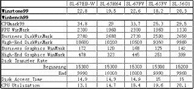
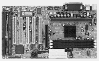
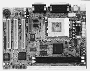
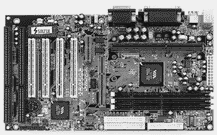
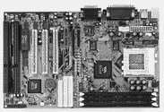
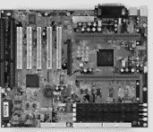
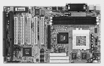
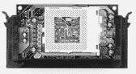
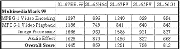

|
|
| 当前位置：电脑报电子版 > 1999 年 > 30 期 > 评测与市场 > 认识硕泰克——硕泰克系列主板测试报告 |
| 《 认识硕泰克——硕泰克系列主板测试报告 》 |
| 硕泰克是今年年初才开始在大陆市场进行推广的主板品牌，发展到今天，这一品牌的系列主板型号已经非常多，可谓阵容强大，在市场上也有了一定的规模。那么这一品牌的主板质量和性能究竟如何呢？稳定性和兼容性能不能过关呢？售后服务和技术支持又怎么样呢？这次我们选择了几款有代表性的硕泰克主板进行了测试，分析了主板的设计和工艺，考察它的性能，稳定性和兼容性。我们希望通过这次测试让大家对硕泰克主板有所了解，有利于读者以后购买主板时作出判断。
公司背景 “硕泰克”是台湾伟格科技股份有限公司的标志和产品名称——“SOLTEK”的音译。公司成立于1996年，是一家较年轻的主板制造专业厂商，而硕泰克公司是伟格公司在大陆注册的公司名称。硕泰克公司的研发部门设在台北，拥有强大的研发实力，新产品研发周期一般为6～8个星期。该公司在美国、荷兰等地共设有五个分公司。公司的两个生产基地每月可生产十万块主板。硕泰克以前的主要销售对象是欧洲地区的OEM客户，该公司的50％以上的产品销往欧洲地区。在美洲市场，硕泰克也有不小的市场份额，随着业务的扩大，硕泰克公司正在逐步加强对大陆市场的开拓。 硕泰克系列主板概述 硕泰克产品已经通过ISO9002品质认证、欧盟CE认证、美国FCC认证和Y2K认证,曾多次获得欧盟各国的IT杂志颁发的奖项。以OEM客户为主的硕泰克公司其产品最为显著的特点是种类非常齐全，该公司目前主板一共有44款之多！对已发布的Intel和VIA的芯片组都有相应产品，同一芯片组的主板也有多款。这些主板在规格上会有不同，以面对不同需要的用户，所以硕泰克系列主板种类齐全，阵容庞大。现有的硕泰克主板包括：Intel BX芯片组五款、Intel ZX芯片组五款、Intel 810芯片组八款、VIA APOLLO PRO芯片组六款、VIA APOLLO PC133芯片组三款、VIA MVP3芯片组七款、VIA MVP4芯片组四款和SiS芯片组两款共计40款。能够在一个很短的时间周期能推出数量惊人的产品，和硕泰克较强的研发势力是分不开的。以BX主板为例：硕泰克的产品包括AT结构的SL－62B、ATX的SL－67B、支持频率更多的SL－67EB、增加了硬件监测功能的SL－67EB－W和双处理器的SL－68A，以上的三款单CPU的ATX主板都只是在附加功能上有改动，主体并没有太多改动。对用户来说，在选择购买某一芯片组的主板时，硕泰克公司的产品根据价格和功能也有更多的选择余地。 测试说明 这次测试我们选择了具有代表性的基于不同芯片组的几款硕泰克主板。通过Winstone99、Winbench99和Multimedia Mark99等专业测试软件来反映主板性能；通过市场占有率较大的几款显卡（包括TNT、TNT2、Voodoo3、Savage、i740）、声卡（包括MX300、S90、SB 64、YAMAHA724）和内存（包括LGS、SEC、HITACHI、HY）的安装使用来测试主板的兼容性；并且由测试人员对每款主板的工艺和功能等作出评价。由于各测试平台的配置不尽相同，所以测试数据间不一定具有可比性，请读者不要轻易作出某款主板最快，某款主板最慢的判断，毕竟它们在价格、功能和销售对象等方面都有很大的不同。我们的软件测试环境为英文版Windows 98，已安装DirectX 6.1。硬盘统一使用UltraDMA/33接口和FAT32。 1.SL－67EB－W 440BX主板 这是一款基于Intel 440BX芯片组的主板，Slot1架构，ATX规格，提供1AGP＋5PCI＋2ISA和3条DIMM插槽。这款主板用料并不俭省，所有的插槽都是FOXCON的产品，在时钟芯片附近，还可以看到钽电容，这在主板中非常少见，为保证稳定性，这块主板使用了大量的直立式电容，外观上显得有一点凌乱，不过主板毕竟是拿来用而不是看的。 这款主板采用了DIP开关加BIOS的频率调整方式，可以通过DIP开关选定倍频和66/100MHz的基准频率，在BIOS中也可以进行频率调整，提供最高150MHz的外频设定，这款主板在120MHz以下频率使用3分频，124MHz到150MHz的各频率使用4分频技术。 测试中，为这款主板配置了128M SEC内存、奔腾Ⅲ450、TNT显卡、SB PCI64声卡、D－Link530网卡、火球CR 8.4G和华硕40倍速光驱。 因为BX主板已经非常成熟，各品牌的BX主板在性能和功能方面的差异都不会太大,SL－67EB－W没有特别的优势和弱点，这款主板支持赛扬、奔腾Ⅱ、奔腾Ⅲ CPU、Ultra ATA接口、USB设备，支持键盘开机、网络唤醒、硬件侦测等，可以说应该有的功能都有，算是一块中规中矩的BX主板。兼容性方面这款主板表现不错，在测试中没有遇到问题。 这款主板在价格上有比较明显的优势，市场零售价为810元。 2.SL－65H64 i810主板 这款主板基于Intel 810芯片组，Socket 370架构，Micro ATX规格，提供3条PCI插槽和2条DIMM插槽。这块主板使用的芯片种搭配是比较高的一种，即82810DC100＋82801AA，在810芯片组中，性能最为强劲。它集成了4M显示Cache，显存颗粒编号为LGS GM72V161621ET7，并且已经将AC′97声卡的CODEC部分集成到了主板上，不必另加CODEC卡。做工方面，这块主板看上去比较整洁，也在关键部位使用了钽电容。 SL－65H64支持高达7倍频的赛扬466，采用了BIOS内部设置频率的设计，没有保留DIP跳线开关。用户在BIOS中还可以打开和关闭主板集成的显卡、声卡和MODEM功能及调整内存和显示Cache的速度。这些功能用户都可以自行选择使用。 在测试中，使用了赛扬366 CPU、128MB LGS 7J内存、火球CR、D－link530网卡搭建平台。安装过程中，这款主板没有BX主板那么顺利，在安装810芯片的显示驱动时我们遇到了一点麻烦，系统总是在配置810的显示驱动程序后死机，换装新版的驱动程序后解决了问题。从测试成绩看，SL－65H64在综合性能上比较出色，但由于810芯片组的先天不足，3D性能方面已经远远落后于TNT2等新一代3D加速卡了。 SL－65H64已经集成了AMR的AR部分，要使用MODEM，还需要外接一块包括MR部分的AMR扩展卡，硕泰克也有提供。这我们在这块主板上使用同一条电话线、同一ISP接入，比较了软MODEM和外置56K MODEM的性能。软MODEM显示的连接速度为50666 bps，甚至超过了部分外置硬Modem，像作为参照的GVC Super5 56K MODEM的连接速度才49333 bps，实际使用中打开网页和下载的速度都没有明显的差别，但是软MODEM的CPU占用率要高很多：一般处于联线状态，没有进行操作时，软MODEM的占用率为13％左右；而外置MODEM的CPU占用率仅为2％。进行打开网页操作时，软MODEM的CPU占用率上升到35％左右，而外置MODEM还不到20％。笔者认为，810的软MODEM对于网上冲浪来说是足够了，但如果用户会在后台下载的同时运行大型程序，软MODEM的性能就不够理想了。如果再同时使用声卡和软波表就会更吃力。 因为810主板高度集成的特征，这款主板不需要额外的声卡和显卡，用户遇到兼容性问题的可能也较小。目前810主板兼容性问题多数出在内存条上，我们这次测试过市场上现在最常见的LGS 7J、HY TC－10、SEC－GA和HITACHI －60内存，这块主板都没有出现问题。 SL－65H64的市场零售价为1250元，价格方面没有什么优势，虽然只有3条PCI扩展槽，但因为主板已经整合了显卡和声卡，对于学校、办公室等较少升级和不需要太多功能的集团用户，它还是一款不错的产品。 硕泰克公司同样基于810芯片组的主板还有好几款，主要是支持或不支持UltraDMA/66、集成或不集成显示Cache的区别，价格有较大差异。 3.SL－67FV－1 VIA Apllo Pro 133 这款主板适用VIA APOLLO PRO芯片组，Slot1架构，提供1AGP＋4PCI＋2ISA和3条DIMM插槽。南桥芯片为VT82C693A，支持PC133的规范；北桥芯片为VT82C686A，支持Ultra DMA/66 IDE接口和AC′97声卡、MC′97 MODEM。这块主板对4组USB设备提供支持，其中有两组要从主板上引出，随着USB设备的广泛普及，这一功能将会显示出优势。 这款主板是较新的型号，做工不错，电容集中于电源和Audio CODEC附近，看上去比较整齐。它的CPU托架使用了蓝色的透明塑料而不是常见的黑色，显得很时髦，强度和弹性也并没有降低，用户不必担心会将它折断。 频率设定方面，这款主板也采用了和SL－67EB－W相同的DIP跳线开关加BIOS内部设定的方式，通过DIP开关可以设置最高8×的倍频和66/100MHz的基准频率，在BIOS内部可以设置最高150MHz的频率，为了保证这块主板能够稳定运行于133MHz或更高的频率，BIOS中还对124MHz和133MHz提供有3分频和4分频两种选择，而133MHz以上频率都使用4分频技术。 基于这款主板我们搭建的平台为：奔腾Ⅲ450、128M SEC－GA内存，华硕V3400TNT，D－Link530网卡，安装了新版的2.1.39 VIA IDE驱动程序和3.3的AGP drive，TNT驱动使用0.48版。从测试成绩来看，这块主板表现相当不错，代表整体性能的Winstone99得分和BX主板相差无几，几乎在同一水准上。Winbench99的各项得分也和BX主板接近，对于VIA芯片组的主板来说，这是一个不小的突破。唯一让人感到遗憾的是在和多媒体性能关系密切的Multimedia Mark99的测试中，VIA芯片组的主板得分偏低，希望能够得到改进。 这款主板也有软MODEM功能，在测试中，我们使用了两块CODEC卡。使用第一块卡时，我们发现这块主板的软MODEM连接速度只有31200bps，和外置 MODEM相差很远，实际使用中也能感到明显的速度差异。为了确定引起这一现象的原因，我们换用了另一款CODEC卡，发现此时连接速度上升到50200bps，打开网页的速度也明显加快，看来是第一块CODEC卡和这块主板之间配合得不够好，读者在购买软MODEM卡时，应该注意到这一点。 SL－67FV－1是率先支持PC133的主板之一，800元的售价也很公道，虽然现在还没有133MHz外频的CPU可以使用，但选择这款主板可以在日后升级时保护用户的投资。 4.SL－65FV VIA Apollo Pro Plus SL－65FV采用VT82C693北桥芯片，VT82C598B南桥芯片，Socket 370架构，插槽为：1AGP＋4PCI＋2ISA＋3DIMM。这款主板支持Socket 370赛扬处理器，最大容量768MB的SDRAM，在工艺和设计方面没有什么特别的闪光点，是一块中规中矩的Socket 370主板。 在测试这款主板时，使用了Socket 370赛扬366、128M LGS SDRAM、火球CR 8.4G硬盘、华硕V3400 TNT显卡、SB PCI64声卡和D－link530网卡。在测试的过程中，我们发现这块主板在使用2.1.33版的IDE驱动程序时会出现问题，测试Winbench99的磁盘传输率会死机，将驱动程序升级到2.1.39后，这一问题即可解决。在测试过程中，我们发现在进行Winbench99的高端图形测试项时会出现错误，通过在SYSTEM INFO栏中编辑CPU频率项，将它改为一个较大的值即可解决问题，测试能够正常运行。这一问题我们以前在使用VIA芯片组的主板上也遇到过，这是使用VIA主板＋TNT显卡＋0.48版驱动程序＋Winbench99出现的一个特殊情况。从测试的成绩来看，这款主板在综合性能和CPU子系统性能方面显得弱了一些，并且在视频回放方面得分较低，磁盘子系统的CPU占用率也较高，这和它采用的VIA芯片组有关。 硕泰克公司还有一款Socket 370的主板SL－65F，这款主板采用了Intel440ZX芯片组，因为Intel ZX芯片组和VIA APOLLO PRO芯片组Pin脚兼容，这款主板和SL－65FV在结构上非常相似，只是元件有微小不同。SL－65FV的市场零售价格为680元。 5.SL－56G1 VIA MVP3 这是一款Socket7架构的主板，ATX结构，提供1AGP＋4PCI＋2ISA和三条DIMM插槽。这款主板北桥芯片为VT82C598MVP，南桥芯片为VT82C686A，支持包括K6－Ⅲ的所有Socket7 CPU。这块主板集成有1MB Cache，使用Elite MT －5的SGRAM，支持UltraDMA/66，集成了AC′97声卡所需的CODEC，为软MODEM留有AMR插槽。在外观上，由于这款主板使用了较多的直立式电容，所以显得比较凌乱，另外，在布局方面，笔者觉得AGP插槽和DIMM插槽之间的距离太近了，用户在插拔内存条时要注意一下。 频率设置方面，SL－56G1使用了硕泰克主板较常见的DIP跳线＋BIOS设定的方式，提供最高133MHz的外频和5.5倍频。这块主板还通过跳线方式提供了CPU电压调整功能。 这次测试中SL－56G1的测试平台为：K6－2 400、128M SEC－GA内存、TNT2显卡、火球CR 8.4G硬盘。在测试时，我们遇到了一个和SL－65FV主板相同的驱动程序问题，只有安装2.1.39的Driver，硬盘才能正常完成Winbench99测试。从测试成绩来看，这款主板在商用性能方面还算不错，但K6－2的浮点性能确实无法和Intel的CPU比较，另外，在磁盘子系统性能方面，由于VIA芯片组的原因，这款主板也显得不够理想。 SL－56G1的市场零售价格为750元，和其他的Super7主板相比没有明显的价格优势，但这款主板采用的南北桥芯片组合很有特色，是我们目前见过的唯一同时支持AC′97声卡、软MODEM和UltraDMA/66接口的Super7主板，是非Intel用户的另类选择。 硕泰克公司的Super7主板中，采用MVP3芯片组的SL－54U5是AMD公司的推荐产品，硕泰克还推出了一款缓存增大到1MB的SL－54U1，性能比SL－54U5更突出。该公司还有一款最新的MVP4芯片组的Super7主板——SL－56F，整合了Trident9880显卡、软声卡和软MODEM，售价为830元，性价比也很不错。 6.SL－68A 440BX 双CPU 这是一款采用Intel 82440BX芯片组的双处理器主板，提供1AGP＋5PCI＋2ISA和4条DIMM插槽，不过并没有集成SCSI控制器。 在做工和用料上，这块主板都相当不错。在CPU旁边的1500μF的电解电容，时钟芯片旁边的钽电容，都会增加主板的制造成本。在频率设定方面，SL－68A采用DIP跳线＋BIOS设定的方式，提供66/75/83/103/100/112/133MHz的频率选择。 SL－68A支持双奔腾Ⅱ/Ⅲ处理器，也可以通过硕泰克的SL－02A转接卡支持双赛扬系统。用户也可以在这款主板上使用单一CPU，并且不需要在另一插槽上插入专用卡，只需要将CPU插到第一个插槽，主板会自动侦测到CPU的数量。 SL－68A的市场零售价格为1600元，适合于发烧友和入门级图形用户。这块主板通过了日本3Dlabs公司的兼容认证，SL－68A加上在3D图形设计方面特别出色的3Dlabs加速卡，作为入门级的3D图形设计工作站是很好的搭配。 7.SL－67KV 这次测试的主板中还有一款硕泰克公司的工程样品，使用了VIA 694A芯片组，除了支持PC133标准外，还支持AGP 4×，这款主板还在改进中，有一些bug还没有解决，上市日期可能在8月底。但它的AGP 4×功能已经能够运作。我们知道，AGP 4×和AGP 2×最大的不同点在于AGP 4×使用1.5V而AGP 2×使用3.3V电压，硕泰克的这款主板可以自动侦测显卡是否支持4×模式，我们使用支持AGP 4×的TNT2，确实在AGP上测量到了1.5V的供电，而且3D测试软件的成绩也显示出了较大差异。但是这款主板的4×模式和2×模式使用的是两块不同的BIOS芯片，我们不能确定性能提升是由哪一部分引起的和提升的幅度有多大，所以不公布测试数据。 8.SL－02A 370转接卡 这是一款Socket 370－Slot1转接卡，可以将Socket 370赛扬在Slot1主板上使用。这款转接卡带有卡匣，而不是一块光光的电路板，起到保护和固定的作用，它还支持66MHz/100MHz手动设置，可以让66MHz外频的赛扬工作在100MHz频率下。为提供更好的超频性能，SL－02A还以0.05V为单位提供了CPU核心电压调节功能，一共有30种选择。另外，这款转接卡支持双CPU主板，可以让不支持双CPU的赛扬直接使用到双Slot1主板上。SL－02A是一款功能非常完备的转接卡，使用也很方便。 附赠软件 硕泰克产品的附加值很大，在支持UltraDMA/66接口的主板包装内都附送一条UltraDMA/66数据线；支持系统硬件温度监测功能的产品都附送1条40cm长的温度感应线；所有的主板都附送Super VB。并且从8月1日起，硕泰克会随所有的主板附送NORTON AV和GHOST，笔者认为新增加的赠品NORTON AV5.01和GHOST5.1c对用户来说比Super VB更有价值。这两个软件中的NORTON AV5.01是一款动态防（反）病毒软件，可以通过Internet线上升级，笔者正在使用，功能非常强大，GHOST5.1c用于数据备份和恢复。另外，厂方已经决定在8月底全面更换新的包装，包括新包装盒、驱动光盘和使用手册，希望新的包装更精美。硕泰克主板总体印象 硕泰克公司的系列主板在用料方面还是不错，虽然不能说是特别的“猛”，但是也决不俭省，它的主板几乎都在晶振附近使用了钽电容，电解电容的数量也依据Intel的标准，插槽都是名厂出品。如果仔细观察，硕泰克的主板在PS/2接口处都有一颗BEAD电感，这是其它主板上较少见的。工程人员介绍，主板的PS/2接口处会产生很大的瞬间电流，加上这颗电感以后，主板的损坏率会少很多。在布局方面，由于每款主板设计不同，很难作出统一评价，但笔者认为硕泰克的主板在布局上有一点美中不足：主板的AGP插槽与DIMM插槽、CPU插槽之间的距离略近了一点，Slot1的主板在安装和拆卸CPU、内存条时可能会不太方便。售后服务是考察一家主板生产商的重要方面，硕泰克承诺的保修期限是13个月，维修时间是14天以内，目前该公司产品的返修率低于1％。因为硕泰克的研发部门比较强的关系，更新它的产品驱动程序和能力BIOS的速度很快，在我们测试的过程中遇到了IDE驱动程序问题，很快就得到了解决，新版的Driver和BIOS也已经加入到驱动程序光盘中。 总的来说，笔者觉得硕泰克主板在设计和工艺方面都比较规范，并没有什么特别花巧的设计，可能是由于长期大量供应欧洲OEM市场的原因，厂商主要考虑的是稳定性问题，不急于开发主板的新功能，不过这也保证了硕泰克产品的质量和稳定性。硕泰克系列主板庞大的阵容，把选择的权利留给用户，这种灵活的操作方式对用户相当体贴。 |
| 下载本期推荐软件 | 页 首 |
| 《电脑报》版权所有，电脑报网站编辑部设计制作发布 |